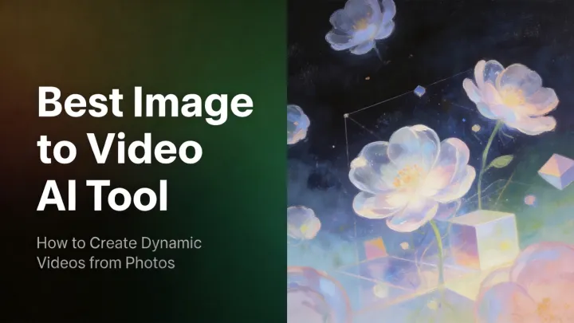

每周 12 条产品营销视频，我把 PixVerse 嵌进了一条 8 分钟的流水线
以前每个产品做营销视频要三个工具切换半小时，现在一条链从产品图直接出多平台尺寸。分享这套从 V5 试错到 V6 定稿、配合飞书任务和 Team Plan Credits 池的完整工作流。
我在一家智能家居品牌做市场，每周要给三到四款新品做营销素材——每条产品图至少出一个用于淘宝主图视频、一个抖音竖屏版、一个小红书 3:4 版。以前这套活儿我得在 Photoshop、剪映和格式工厂之间来回切，每个产品从修图到导出完三个尺寸至少三十分钟，手动搬运素材的重复动作占了一半时间。
三个月前我把 PixVerse 插进了这条流水线——它的官网做得很直观，文生视频、图生视频、模型版本切换全部在一个界面里。现在每个产品从素材到出片稳定在八分钟以内。下面是具体怎么接的——每个环节我都写清了衔接点和最容易断链的地方，照着拼能直接用。
旧流程卡在哪
先说清楚我原来的做法，才能说明白 PixVerse 到底替换了什么：
- 产品实拍图进 Photoshop 修干净背景、调亮细节
- 丢进剪映，套一个产品展示模板，手动加缩放动画、配一段背景音
- 导出 16:9 淘宝版、9:16 抖音版、3:4 小红书版——每导一个得改一次画布比例，中间还会碰到剪映压缩画质的问题要重来
- 手动把三个文件分别上传到各平台素材库
这套流程最痛的不是某一步慢，而是每做一个产品都要重复一遍完整的手动搬运。剪映模板虽好用，但每次换产品图还是得手动拖拽定位、检查边缘有没有被裁掉。一周下来光这部分的重复劳动就占了四五个小时，而且模板化的动效看多了自己都觉得审美疲劳。
新流程：把 PixVerse 插在 Photoshop 和素材库之间
现在的流水线是这样的：
Photoshop 修图 → PixVerse 图生视频（V5 试方向 → V6 定稿）→ OneDrive 自动同步 → 各平台素材库中间串了三个衔接点：飞书任务看板管分发、Team Plan Credits 池管预算、OneDrive 文件连接器管落盘。具体每个环节怎么接：
环节一：图生视频锁定主体，一步跳过剪映
这是替换剪映的核心动作。修完的产品图直接丢 PixVerse 的图生视频模式——因为主体和构图已经定了，我不用从零想创意，只需要写一段运动描述。比如一台智能音箱放在木桌上的场景：
镜头从左侧缓慢推进到产品特写，柔和的晨光从侧面照射，金属边缘反射出温暖的光斑，LED 灯环从灭到亮渐变亮起。
这里有个关键习惯：每次从同一张图出三个方向。一个缓慢推进、一个环绕、一个轻微俯仰，PixVerse 一次生成三个版本，我挑一个最顺眼的进下一步。这比剪映里手动调缩放曲线快太多——AI 帮我试了三个运镜，我只做选择不做操作。

环节二：V5 试错，V6 定稿——Credits 成本控制
PixVerse 有多个模型版本，我踩过直接用 V6 全流程跑的坑——Credits 烧得快但很多其实是在试错阶段浪费的。现在固定了一个两阶段策略：
- 试错阶段用 V5 + 720P：V5 是性价比模型，Credits 消耗比 V6 低不少，出的效果在看方向阶段已经够用了。这一阶段我主要验证运动描述对不对、主体有没有走样
- 定稿阶段切 V6 + 1080P：方向定了之后，V6 出最终版。15 秒时长、原生多镜头、原生音频——一次生成的版本画质和稳定性都比 V5 好，而且不用后期自己加音效
这个两阶段策略让我每个产品的 Credits 消耗从平均 800 降到了 300 左右。团队四五个人都这么用，Credits 池的月消耗稳定在预算内。
环节三：Team Plan 把 Credits 和资产统一起来
这里我必须提一下团队版的价值。PixVerse 从官方下载注册账号后就能用个人订阅，刚开始我是每个人单独订阅，后来发现两个问题：一是新人不知道怎么省 Credits，上手第一天可能就把试错和定稿混着用；二是我做的好的运动描述模板，同组的人看不到也用不了。
现在整个市场组共用一个 Team Plan 工作空间——Credits 是统一池子，我给每个人设了每月 3000 Credits 的上限，新人第一天也不会乱烧；我收藏的运动描述模板存在共享库里，大家可以直接拿来改参数。更重要的是，产品图这个环节修完就上传到团队素材库，PixVerse 生成的视频自动归档进去，整个组的人随时能调。
最容易断链的两个地方
这套流程跑了三个月，主要在两个环节出过问题。我把处理方式记下来，你碰到了直接用：
断链一：图生视频主体走样怎么办
图生视频的前提是「主体锁定不变」，但有时候产品图背景太杂或者边缘模糊，AI 会把前景和背景搞混——比如音箱的阴影被当成主体一起动了起来。
碰到这种情况我不硬调参数，而是退回文生视频模式——用主体参考功能的做法是从PixVerse文档里翻到的——把产品图喂给 AI 当视觉锚点，再写完整的提示词。多花一轮生成，但比在图生里反复调运动描述快。
断链二：Credits 见底了怎么紧急救场
Team Plan 统一池子的好处是能看到整体消耗，但忙起来还是会碰到月底 Credits 见底的情况。我的应急方案是切回 V5 + 720P——画质降一点但能交差，而且 V5 的 Credits 消耗低到撑到下个月没问题。试过一次月底最后三天全组切 V5，按时出了所有素材，Credits 还剩 200 多。
效果和边界
量化一下这条链的效果：每个产品从原来的三十分钟降到八分钟，其中 PixVerse 生成占四分钟、我挑版本和确认尺寸占两分钟、其余是文件同步的等待时间。少了至少两次手动搬运 Photoshop 到剪映的操作，也不用反复导出不同尺寸。
但这条流程不是万能的，以下情况我还是会退回老办法：
- 从零开始的创意视频：比如品牌故事片，没有现成的产品图当锚点，图生视频帮不上忙
- 精确控制字幕和特效：PixVerse 目前没有字幕编辑能力，如果视频里需要精确到毫秒的字幕条，还是得进剪映
- 纯音频场景：如果只需要一段产品介绍配音配合静态图，PixVerse 反而多余
除此之外，每周 12 条产品营销视频的活儿现在稳定在一个上午就能干完，省出来的时间我用来做更多创意方向的 A/B 测试——这是这条流水线给我最大的回报。
这套 PixVerse 工作流的文档和我整理的运动描述模板，GitHub 上有完整版本方便 issue 和 PR（GitHub），国内的朋友可以直接去 Gitee 或 GitCode 拿镜像——三个仓库同步更新，总有一个你访问顺畅。